01はじめに ― 「今度こそ」を何度繰り返しましたか
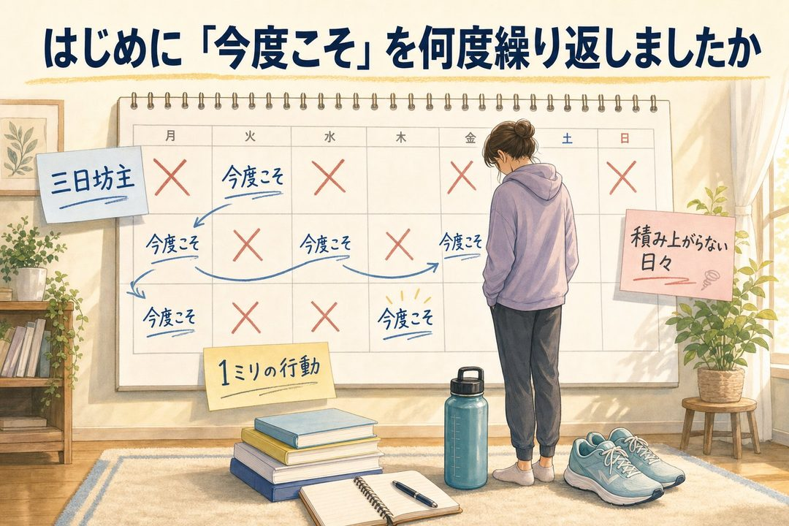
はじめに 「今度こそ」を何度繰り返しましたか
英語を勉強しよう、と決めた日のことを覚えているでしょうか。
参考書を買い、アプリを入れ、最初の三日間は驚くほど順調でした。
ところが一週間もすると、なぜか開かなくなる。
そして数ヶ月後、今度は中国語に興味が湧きます。
次こそはと思って始めるのですが、また同じことが起きる。
しばらくすると韓国語のテキストが本棚に並んでいる。
これは、ある質問サイトに投稿された実際の悩みです。
読んでいて胸が痛くなるのは、この人が怠けているわけではないからです。
むしろ何度も挑戦している。
挑戦の回数だけを数えるなら、この人は人並み以上に行動を起こしているはずです。
それなのに、手元には何も積み上がっていない。
もし、いま少しでも心当たりがあったなら、まず知っておいてほしいことがあります。
それは、あなただけに起きていることではありません。
習慣化アプリを提供するエーテンラボが2023年10月に利用者706人へ行った調査では、85%の人が三日坊主を経験していると回答しました。
習慣を身につけようと意識的にアプリまで入れている人たちの中で、です。
つまり続かないというのは、意識の低い一部の人に起きる例外ではなく、圧倒的多数が通ってきた道だということになります。
それでも私たちは、続かなかった理由を自分の性格に求めてしまいます。
意志が弱い。
飽きっぽい。
要領が悪い。
そうやって自分を責めているあいだに、次の「今度こそ」がやってきて、また同じ場所を回り続ける。
この本は、その輪から降りるために書きました。
この本が約束しないこと
先に、はっきりさせておきたいことがあります。
この本は、あなたの意志力を鍛えません。
根性を出せとも、朝5時に起きろとも、モチベーションを高く保てとも言いません。
そういう本はすでにたくさんありますし、それで続いた人はもうこの本を読む必要がないはずです。
読者の声を調べていて、繰り返し出てくる不満がありました。
精神論で押し切ろうとする本を読むと、最初は高揚するけれど、続かなかったときに前より深く落ち込む、というものです。
「意志が弱いからダメなんだ」という結論だけが手元に残り、次の挑戦のハードルがむしろ上がってしまう。
だからこの本では、意志力の話をほとんどしません。
代わりに扱うのは設計です。
続く人と続かない人を分けているのは、性格の強さではありません。
行動が起きる仕組みが、生活の中に組み込まれているかどうかです。
そして仕組みは、性格と違って後から変えられます。
なぜ「1ミリ」で足りるのか
もうひとつ、この本の中心にある考えをお伝えしておきます。
多くの人は、変化には大きな行動が必要だと思っています。
だから腕立て伏せを50回に設定し、毎日1時間の勉強を自分に課す。
そして三日でやめる。
ところが、続く人がやっているのは逆のことです。
バカバカしいほど小さく始めているのです。
腕立て伏せ1回。
日記1行。
本を1ページ。
それなら、疲れていてもできてしまう。
「そんな小さなことに意味があるのか」と思われたかもしれません。
その疑問はもっともです。
1回の腕立て伏せで筋肉はつきませんし、1行の日記で人生は変わりません。
意味が生まれるのは、それが積み重なったときです。
しかも、ただ足し算で増えていくのではありません。
お金の複利になぞらえるなら、小さな変化も、時間を味方につけると加速していく、と考えることができます。
そして複利のいちばん厄介な性質は、途中まで何も起きていないように見えることです。
多くの人はここで降ります。
効果が出る手前で、「やっぱり意味がなかった」と判断してしまう。
この本の第1章は、まるごとその話に使います。
なぜ1ミリで足りるのか。
なぜ途中では見えないのか。
それが腹に落ちれば、続けることの意味が変わります。
この本の歩き方
全体は5つの章でできています。
第1章では、1ミリの行動がなぜ10年後を変えるのかを、数字で見ていきます。
ここが本書の土台です。
第2章では、「意志が弱い」という思い込みを解体します。
習慣化に必要な日数の研究を知ると、あなたが挫折したタイミングは、まったく異常ではなかったとわかるはずです。
第3章は、いちばん実践的な章です。
小さすぎて失敗できない初動の作り方を、手順として書きました。
読みながら手を動かせます。
第4章では、多くの人が折れる時期の越え方を扱います。
記録、可視化、そして人の目という外部の力の使い方です。
第5章では、10年という時間軸に戻ります。
続けた人が最終的に手にするものは、実はスキルそのものではありません。
各章の終わりには漫画を置きました。
理屈で理解したことを、物語で自分ごとにするためです。
読み終えたあと、やってほしいこと
最後に、この本の唯一のお願いを先に書いておきます。
読み終えたら、たった1つだけ、小さすぎる行動を決めてください。
2つはいりません。
5つも10もいりません。
1つです。
しかも、笑ってしまうくらい小さいもの。
なぜ1つなのかは第5章で説明しますが、複数の習慣を同時に始めることは、専門家が挙げる典型的な失敗パターンのひとつです。
あれもこれもと欲張った瞬間に、全部が崩れやすくなります。
ページをめくる前に、ひとつ思い出してみてください。
あなたが最後に「今度こそ」と決めたのは、いつでしたか。
そのとき決めた目標は、大きすぎませんでしたか。
それは、あなたの意志が弱かったからではありません。
始めましょう。
今日の1ミリから。
02第1章 1ミリの正体 ― なぜ小さすぎる行動が10年後を変えるのか
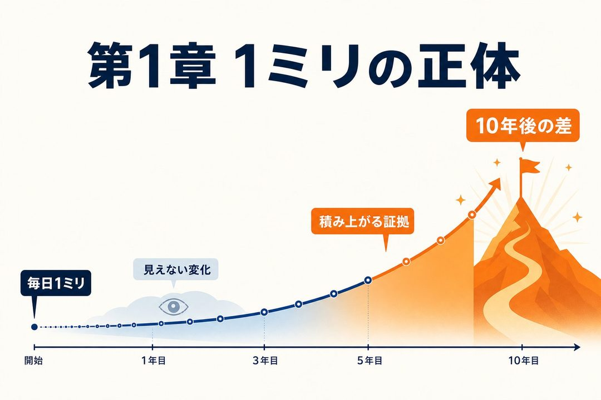
第1章 1ミリの正体
「たった1ミリ動いて、何になるのか」
習慣の話をすると、多くの方がこの疑問にぶつかります。
そして、その疑問はまったく正しいのです。
1ミリは、今日という1日の中では何の意味も持ちません。
腕立て伏せ1回で体は変わらず、英単語3つで英語は話せません。
だからこそ私たちは、1ミリではなく100メートルを走ろうとして、そして三日で止まります。
習慣化アプリ「みんチャレ」を運営するエーテンラボが2023年10月に利用者706人へ行った調査では、85%の人が三日坊主を経験していました。
続かないのは、あなただけに起きている事故ではなさそうです。
多くの人に共通して起きている現象だと考えることができます。
この章でお伝えしたいのは、根性の話ではありません。
1ミリという単位が、時間という掛け算と組み合わさったときに何が起きるのか。
その正体を、数字と図で腹に落としていただきます。
1ミリの変化は、その日には見えない
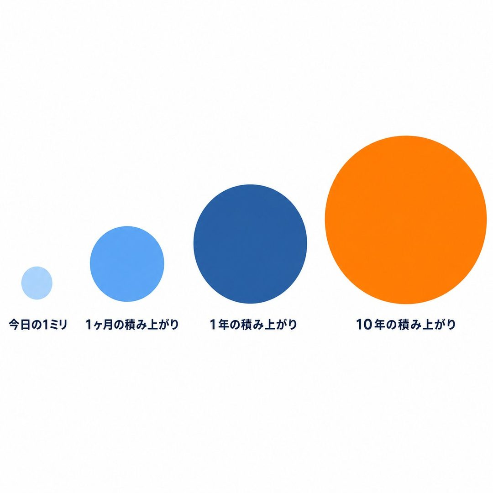
1日の変化の大きさ
お金の複利をイメージしてください。
年利の効いた預金は、最初の数年、ほとんど増えていないように見えます。
グラフはほぼ平らです。
増えているのは事実なのに、増え方が小さすぎて、目盛りの上では動いていないように見えるだけなのです。
習慣を考えるときも、この形をイメージすると理解の助けになります。
今日読んだ1ページは、明日のあなたを賢くしません。
今日歩いた10分は、明日の体重計を1グラムも動かしません。
変化が起きていても、変化を測る目盛りが粗すぎて検出できない。
これが「小さい行動は無意味に見える」という錯覚の正体ではないか、というのが本書の見立てです。
ただし、これはあくまで考えるための比喩です。
技能・健康・信頼など、領域によって成果の現れ方は同じではなく、直線的に伸びるものもあれば、ある時点から急に伸びるものもあります。
ところが私たちは、目盛りに映らないものを「起きていないこと」と判定してしまいます。
そして「効果がないからやめる」という、きわめて合理的に見える判断を下します。
ここが最初の分岐点です。
複利というたとえで考えるなら、平らに見える区間を通過した人にしか、次の景色は見えてきません。
平らに見える期間があることは、変化が止まっている証拠ではなく、積み上がりが進んでいる途中だと考えることができるのです。
英語学習の例を見てみましょう。
ビズメイツが2021年5月に発表した調査では、英語学習経験者111名のうち87.4%が挫折を経験し、そのうち81.4%が3ヶ月以内に離脱していました。
挫折の理由の最上位は「モチベーションの低下」で62.9%、次いで「上達を感じられない」が39.2%です。
この数字が示しているのは、意志の弱さではなく、人は、変化が目盛りに現れる前に判定を下してしまいやすいという、認知の傾向かもしれません。
複利というたとえに当てはめて考えるなら、3ヶ月はまだ平らな区間を歩いている時期だと捉えることもできます。
もしかすると多くの人は、効果がなかったからやめたのではなく、効果が見える前にやめてしまっているのではないでしょうか。
停滞は失敗ではなく「潜伏期間」
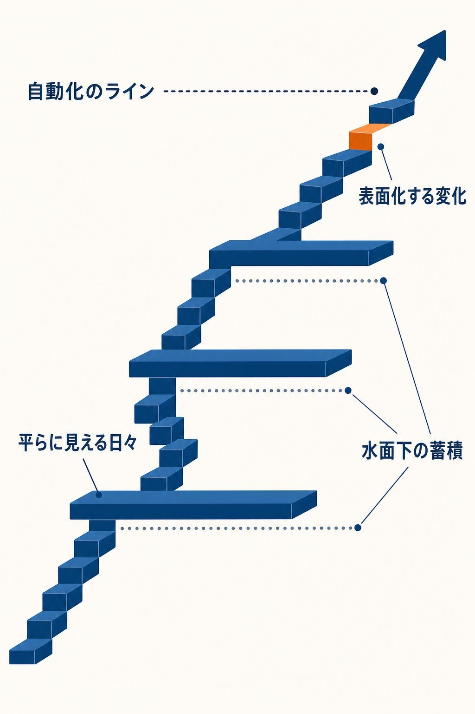
停滞に見える潜伏期間
ロンドン大学ユニヴァーシティ・カレッジのフィリッパ・ラリーらは2009年、96人を12週間にわたって追跡し、新しい行動が「意識せずに自動的にできる」と感じられるまでの期間を測定しました。
結果は、平均で66日。
そして個人差の範囲は18日から254日にまで広がっていました。
ここで注目していただきたいのは、平均値ではなく幅のほうです。
同じ行動でも、自動化までに1ヶ月かからない人と、8ヶ月以上かかる人がいる。
つまり、あなたが2ヶ月続けて「まだしんどい」と感じていたとしても、それは失敗ではなく、単にあなたの潜伏期間がまだ終わっていないだけなのかもしれません。
私はこの区間を「潜伏期間」と呼んでいます。
地面の下では根が伸びているのに、地上には何も出ていない時期です。
この時期の特徴は、努力の量と手応えの量が一致しないことにあります。
だから多くの人が、ここで「向いていない」と結論を出します。
潜伏期間を失敗と誤読してしまうことが、複利を止める大きな要因の一つだと考えられます。
逆に言えば、この期間の存在をあらかじめ知っておくことで、離脱を防ぎやすくなるかもしれません。
効果が出ないのではなく、まだ出る時期ではない。
そう言い換えられる人は、平らな区間を歩き続けやすくなるはずです。
積み上がるのは行動ではなく「証拠」
積み上がっていく3つの層
ここが本書で最もお伝えしたい部分です。
毎日の1ミリが積み上げているのは、実は行動の総量ではありません。
積み上がっているのは、自分についての証拠です。
腕立て伏せを30日続けた人が手にしているのは、30回分の筋肉ではありません。
「自分は決めたことを30日続けられる人間らしい」という、反論しにくい記録です。
これは気合いや自己暗示とは違います。
実際に起きた出来事の集積であり、証拠だからこそ、あとから覆せません。
南カリフォルニア大学のウェンディ・ウッド教授が2014年に発表した研究によれば、私たちの日常行動のうち約40%から43%は、同じ状況で繰り返される自動的な行動です。
判断して選んでいるのではなく、その場所・その時間になったから体が動いている行動が、4割前後を占めているということです。
この研究がわかりやすく示しているのは、私たちの毎日にはそれだけの割合で、いちいち決断せずに繰り返している行動があるという事実です。
研究が明らかにしたのはそこまでで、その中身が何でできているかまでを述べているわけではありません。
ただ、ここから先は本書の見方として、こう考えてみたいのです。
繰り返されている行動の多くは、過去の自分が何度も通った道の上にあるのではないでしょうか。
今日ほとんど無意識にやっていることは、いつかの自分が選び、それなりの回数を重ねたから、そこにあります。
そう捉えると、今日の1ミリは、明日以降の自分が通る道を1本ずつ敷いている作業だと考えることができます。
だから、続けることの本当の報酬は、成果よりも先に来ます。
成果はまだ目盛りに現れていなくても、証拠は初日から1件ずつ確実に積み上がっているのです。
複利はマイナスにも効く
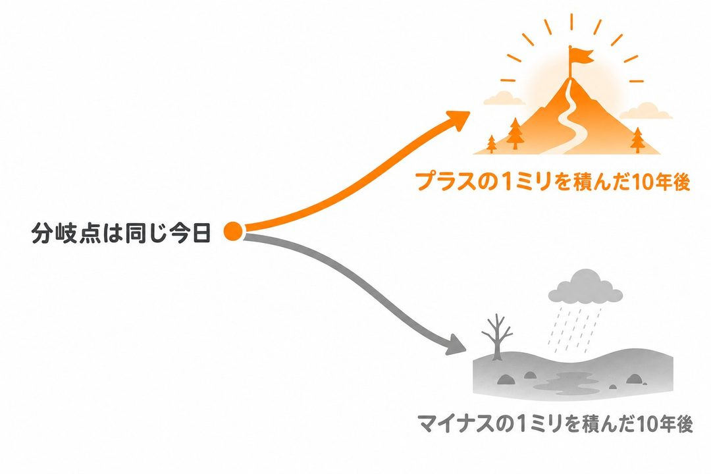
同じ1ミリが分ける10年後
ここまでの話には、素直に喜べない裏側があります。
複利は、方向を選びません。
複利という仕組みが持っているのは「小さな変化に時間を掛け算する」機能だけです。
掛けられる中身がプラスかマイナスかを、仕組みは判定しません。
毎晩30分の夜更かしも、毎日の小さな先延ばしも、まったく同じ形で積み上がります。
そしてマイナスの複利にも、あの平らな区間があります。
「1日くらい夜更かししても平気」は正しい観察です。
実際、1日では何も起きません。
目盛りは動きません。
プラスの1ミリが今日は無意味に見えるのと、まったく同じ理由で、マイナスの1ミリも今日は無害に見えるのです。
この対称性が、悪い習慣を厄介にしています。
前の節でお伝えした「証拠」も同じです。
「今日はやらなかった」という日は、疲労の記録ではなく、「自分は決めたことをやらない人間らしい」という証拠として1件積み上がります。
この証拠が積み上がると、次に何かを始めるときの初期値が下がります。
三日坊主を繰り返した人が、新しい挑戦の前から「どうせまた続かない」と思うのは、性格の問題というより、証拠の残高がそう感じさせているのかもしれません。
ただし、悲観する必要はありません。
方向を選ばないということは、方向を変えれば同じ勢いで逆に効くということでもあります。
マイナスの複利を10年積んできた人ほど、この仕組みの威力を体感で知っているはずです。
10年を「日数」に変換して見る
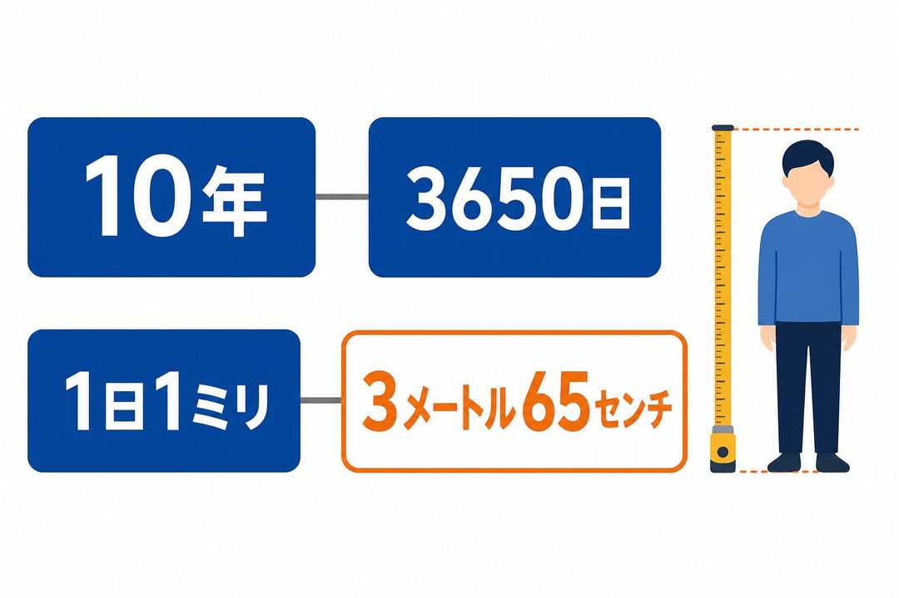
10年を日数に変換する
最後に、この章の締めくくりとして、単位の変換をしていただきます。
「10年」と聞くと、それは遠い未来の、輪郭のない時間に感じられます。
ところが10年を日数に直すと、3,650日になります。
この瞬間、10年は「未来」から「回数」に変わります。
1日1ミリなら、3,650ミリ。
3メートル65センチです。
人の身長の倍を超える距離が、目盛りに映らない1ミリだけで積み上がる計算になります。
逆から見れば、10年で3メートル動きたいなら、今日必要なのは1ミリだけだということです。
念のため断っておくと、この3,650日という計算は複利ではなく単純な足し算です。
毎日同じ量を積み重ねるとどれだけになるかを示しているだけで、複利のように増え方そのものが加速する計算ではありません。
それでも、続けること自体が次の1ミリを選びやすくするという波及効果は別に重なっていきます。
この波及効果のほうを、本書では複利というたとえで説明しています。
ここで重要なのは、3,650という数字の大きさではありません。
10年という塊が、今日という1回に分解できるという事実のほうです。
私たちが習慣に挫折してしまうのは、多くの場合、10年分の重さを今日1日で持ち上げようとしてしまうからではないでしょうか。
10年分のダイエットを今日始めようとすると、いきなり1時間走ることになります。
そして続きません。
10年を日数に変換すると、やるべきことの単位が変わります。
10年後に必要なのは、3,650日分の努力ではありません。
今日の1ミリと、明日もそれを選べる状態です。
この2つだけです。
つまり、複利というたとえで捉えるなら、大切なのは「大きな行動を持続させる技術」ではなく、「小さすぎる行動を、明日も選べる状態に保つ技術」なのです。
そして、ここまで読んで、多くの方はこう思っているはずです。
理屈はわかった。
1ミリでいいことも、平らな区間があることもわかった。
それでも、その1ミリすら続かなかったのが自分なのだ、と。
その感覚こそが、次の章のテーマです。
私たちは続かなかった理由を、ほぼ例外なく「自分の意志が弱いから」に着地させます。
ですが、もしその原因の見立てそのものが最初から間違っていたとしたら、あなたはこれまで、直せない場所を直そうとして10年を使ってきたことになります。
続かないのは、本当にあなたの意志のせいなのでしょうか。
03第2章 「意志が弱い」の誤解 ― 続かないのはあなたのせいではない
<!-- [HEADER_IMAGE: pattern=illustration | title=第2章 「意志が弱い」の誤解 | elements=21日神話,自動行動4割,天気のような意志力,完璧主義,設計が悪い | description=自責のループから抜け出し、原因を意志力から設計へ移す章。
うつむいた人物の背後で「意志が弱い」という文字がひび割れ、代わりに設計図が現れる構図 -->
前の章の最後で、こう問いかけました。
1ミリの積み重ねが10年後を変えると頭でわかったとして、では、なぜ私たちはその1ミリを続けられないのか。
多くの人はこの問いに、一瞬で答えを出します。
自分の意志が弱いからだ、と。
この答えは早くて、わかりやすいものです。
ですが、これから見ていく研究を踏まえると、その答えは実態とずれている可能性が高いのです。
この章では、あなたが自分に貼った「意志が弱い」というラベルを、研究の知見を手がかりに一枚ずつ剥がしていきます。
剥がした後に何が残るのか。
本書の見方では、それは性格の欠陥ではなく、修正可能な設計ミスであることが多いのです。
21日神話が、あなたを挫折させた
「習慣は21日で身につく」。
この言葉を、あなたも一度は聞いたことがあるはずです。
手帳にもアプリにも、この21という数字が刻まれています。
そして、あなたは22日目に挫折しました。
だから思ったのです。
21日で身につくはずのものが身につかなかった。
やはり自分は人並み以下なのだ、と。
ここで、あなたを22日目に絶望させたその前提そのものを疑ってください。
「21日で習慣化」には、科学的な裏づけがありません。
実際に測った研究があります。
University College London の Phillippa Lally らが2009年に発表した調査です。
96人の参加者に、水を飲む、運動をするといった新しい行動を毎日続けてもらい、12週間にわたって「どのくらい自動的にできるようになったか」を追跡しました。
結果はこうでした。
行動が自動的に感じられるまでにかかった期間は、平均66日。
21日ではありません。
3倍以上です。
さらに重要なのは、その内訳です。
範囲は18日から254日まで広がっていました。
18日で自動化した人もいれば、254日かかった人もいる。
同じ人間が同じように取り組んでも、これだけの差が出るのです。
スタンフォード大学の Andrew Huberman も、この個人差の大きさこそが習慣化の実態だと解説しています。
<!-- [INLINE_IMAGE: pattern=scale-circles | title=21日という数字には根拠がない | elements=神話21日,平均66日,最短18日,最長254日 | description=Lally 2009の実測値。
21日の円が小さく、平均66日が3倍の円、その外側に18日から254日の広い帯が重なる比較図 -->
つまり、22日目に続かなかったあなたは、失敗したとは限りません。
平均66日と比べても、22日はまだ早い段階です。
ただし66日はあくまで平均値であり、あなた自身の締切ではありません。
必要な期間は人によって、行動によっても大きく異なり、18日で自動化した人もいれば254日かかった人もいます。
21日という根拠のない目印に自分を合わせて採点していただけなのかもしれません。
行動の4割は「意志で選んでいない」
もうひとつ、私たちが取り違えていることがあります。
それは「自分の1日は、自分の意志で決めている」という思い込みです。
南カリフォルニア大学の Wendy Wood は、人が日常でとる行動を調べ続けてきた研究者です。
その報告によれば、日常行動の約40%から43%は、同じ状況で繰り返される自動的な行動でした。
朝起きて、まず何をしましたか。
その手はどこへ伸びましたか。
帰宅して玄関を上がってから、テレビをつけるまでの間に、あなたは何かを決断したでしょうか。
おそらく、していません。
体が勝手に動いたはずです。
これは、あなたの1日のかなりの部分が、意志ではなく状況によって動いている可能性を示しています。
同じ時間、同じ場所、同じ手順。
その状況に置かれると、考える前に体が動く。
それも習慣の正体の一つと言えそうです。
<!-- [INLINE_IMAGE: pattern=venn | title=1日の行動の内訳 | elements=意志で選んでいる行動,状況が自動で決めている行動 約4割,重なる部分 | description=Wendy Woodの知見。
円の4割強が「自動行動」として色分けされ、意志の領域が思ったより小さいことを示す -->
この事実から、二つのことが見えてきます。
ひとつ目。
あなたが今、悪い習慣をやめられないのは、意志が敗北しているからとは限りません。
状況があなたより先に動いているからかもしれません。
ソファに座った時点で、スマホを手に取ることはもう決まっていた、とも考えられます。
ふたつ目。
ここが希望です。
行動の4割前後が状況によって自動的に起きているなら、状況の手がかりを変えることで、一部の自動行動は意志を使わなくても変えやすくなる可能性があります。
戦う相手は自分の性格ではなく、自分の周囲の配置なのかもしれません。
意志力は筋肉ではなく、天気に近い
「意志力は筋肉と同じで、鍛えれば強くなる」。
この比喩も、私たちを苦しめてきました。
鍛えれば強くなるということは、続かない自分は鍛え方が足りない、ということになってしまうからです。
現実に照らして考えるなら、意志力は筋肉より天気に似ているのではないでしょうか。
昨日は晴れていました。
今日は雨です。
理由はあります。
睡眠が足りない、仕事で叱られた、体調が悪い、家族と揉めた。
そのどれもが、あなたの意志力の残量を静かに削っている、と考えることができます。
そして、それらのほとんどはあなたが選んだ出来事ではありません。
つまり、意志力は毎日同じ量だけ手元にあるとは限らないのです。
にもかかわらず、私たちは計画を立てるとき、いつも晴れの日の自分を基準にします。
「毎朝5時に起きて1時間勉強する」。
それは、意志力が満タンの日にしか実行できない計画です。
雨の日は必ず来ます。
来た瞬間に計画は破綻し、破綻した理由を私たちは天気ではなく自分の人格のせいにします。
スタンフォード大学の行動科学者 BJ Fogg は、この点をはっきりと述べています。
行動変化は意志力ではなく、デザインから生まれる。
<!-- [INLINE_IMAGE: pattern=comparison-table | title=意志力に頼る計画とデザインに頼る計画 | elements=晴れの日だけ動く計画,雨の日でも動く計画,前提としている自分,破綻したときの解釈 | description=左に「毎朝5時に1時間勉強」、右に「歯磨きの後にテキストを1行読む」。
前者は好調時の自分が前提で崩れると自責に、後者は不調時の自分が前提で崩れにくい -->
良い設計とは、雨の日の自分でも実行できる設計のことです。
晴れの日の自分に合わせて計画を立てるのをやめる。
それだけで、続かない理由の多くが消えていく可能性があります。
完璧主義という名の自滅装置
ここまでは世界共通の話でした。
ここからは、日本語で暮らす私たちが特に踏みやすい地雷の話をします。
それが完璧主義です。
実際に、こんな経験はないでしょうか。
30日連続で走ると決めた。
順調に18日続いた。
19日目、寝坊した。
走れなかった。
その夜、あなたは走らなかったことよりも、連続記録が途切れたことにダメージを受けた。
そして20日目、走りませんでした。
21日目も走りませんでした。
気づけば、二度と走らなくなっていました。
ここで何が起きたのかを冷静に見てください。
あなたが失ったのは、たった1日分の運動です。
18日分の積み上げそのものが、なくなるわけではありません。
1日休んだだけで、18日がゼロになるわけではない、と考えることができます。
にもかかわらず、私たちは記録が途切れた瞬間に「もう台無しだ」と判断してしまいます。
0か100かでしか自分を採点しないため、99が1に転落するのです。
これは高い基準ではありません。
基準の高さを装った、自滅の装置です。
<!-- [INLINE_IMAGE: pattern=before-after | title=1日休んだ後に起きること | elements=完璧主義の解釈 台無しだから全部やめる,現実 18日分は残っている 20日目から再開できる | description=上段は18本積み上がったブロックが1日の欠けで全て崩れ落ちる幻想、下段は1本欠けただけで残りは積み上がったままの現実 -->
だから、こう決めてしまってください。
寝坊した日があっても自分を責めず、翌日からまた始める。
これはゆるい妥協ではなく、続けるための技術です。
思い出してください。
Lally らの研究で、習慣が自動化するまでにかかった期間は平均66日、長い人は254日でした。
66日の道のりで、1日も休まない人がどれだけいるでしょうか。
休みが混ざることも、十分あり得る範囲だと考えられます。
少なくとも、完璧な連続記録だけが習慣化の条件ではなさそうです。
「意志が弱い」を「設計が悪い」に翻訳する
ここまでの3つの視点を並べてみましょう。
習慣化には平均66日かかり、人によっては254日かかる。
行動の4割は意志ではなく状況が決めていると考えられる。
そして意志力は天気のように毎日変動すると捉えることもできる。
この3つを前提にすると、「21日続かなかった自分は意志が弱い」という文章は、かなり疑わしくなります。
そこで、これから使う言葉を入れ替えてください。
「意志が弱い」を、そのまま「設計が悪い」に翻訳するのです。
翻訳の例を挙げます。
「毎朝走れない自分は意志が弱い」は、「起きてすぐ走れる場所にウェアを置いていない設計が悪い」になります。
「勉強が続かない自分は意志が弱い」は、「机に座る前にスマホが手に届く設計が悪い」になります。
「ジムに行けない自分は意志が弱い」は、「行くかどうかを毎回考える余地が残っている設計が悪い」になります。
<!-- [INLINE_IMAGE: pattern=list-vertical | title=自責の言葉を設計の言葉に翻訳する | elements=意志が弱いから走れない を ウェアが遠い設計が悪い に,意志が弱いから勉強しない を スマホが手元にある設計が悪い に,意志が弱いからジムに行かない を 毎回考える余地がある設計が悪い に | description=左の自責文が右の設計文へ置き換わる翻訳リスト。
すべて主語が「私の性格」から「私の周囲の配置」へ移っている -->
この翻訳には、決定的な違いがあります。
性格は今日は変えられませんが、設計は今日変えられます。
「意志が弱い」で止まると、できることは何もありません。
反省と自己嫌悪が残るだけです。
しかし「設計が悪い」まで翻訳できれば、そこから先はすべて具体的な作業になります。
ウェアを枕元に置く。
スマホを別室に置く。
考える余地を消す。
どれも今日の夜、5分でできることばかりです。
自責は、あなたを止めます。
設計は、あなたを動かします。
この章であなたに手放してほしかったのは、努力ではなく、自分を責めるという習慣そのものでした。
さて、原因が設計にあるとわかりました。
ならば、次に必要なのは具体的な設計図です。
どこまで小さくすれば、雨の日の自分でも実行できるのでしょうか。
どこにくっつければ、意志を使わずに体が動き出すのでしょうか。
次の章では、小さすぎて失敗のしようがない初動を、あなたの生活の中に一つ組み立てます。
04第3章 1ミリの設計図 ― 小さすぎて失敗できない初動をつくる
第3章 1ミリの設計図
前章で私たちは、「意志が弱いから続かない」という言葉を「設計が悪いから続かない」に翻訳しました。
犯人は性格ではなく、設計図の不在です。
ではその設計図は、どうやって引けばいいのでしょうか。
この章は、本書のなかで最も手を動かす章です。
読み終えたときにあなたの手元に、明日の朝から実行できる一行のルールが残っていること。
それがこの章の唯一の目的です。
理論の解説は最小限にとどめ、そのかわりに順番どおりに埋めていけば設計図が完成する形で進めます。
紙でもスマートフォンのメモでも構いません。
何か書けるものを用意して読み進めてください。
設計図に必要な部品は五つです。
小さくする、くっつける、条件文にする、時間と場所を決める、祝う。
この五つが揃ったとき、その行動は「頑張ってやるもの」から「気がついたら終わっているもの」に変わっていきやすくなります。
目標を「バカバカしいほど小さく」割る
最初の部品は、行動のサイズです。
ここで多くの人が、いきなりつまずきます。
三日坊主になった人の記憶をたどると、たいてい初日は成功しています。
問題は初日ではなく、初日の設定です。
「毎日30分走る」「毎日1時間勉強する」。
この設定は、やる気が最高潮の日に決められています。
ところが実行するのは、残業で疲れた日、子どもが熱を出した日、なんとなく気が乗らない日の自分です。
目標は最高の日の自分が決め、実行は最低の日の自分がする。
この不一致が、挫折の正体だと考えられます。
ですから設計の第一歩は、目標を「最低の日の自分でも失敗できないサイズ」まで割ることです。
腕立て伏せなら1回。
日記なら1行。
読書なら1ページ。
英単語なら1語。
ランニングならシューズを履いて玄関を出るところまで。
声に出すとバカバカしく聞こえるはずです。
そのバカバカしさこそが正解の合図です。
「そんな量では効果がない」と感じたなら、第1章を思い出してください。
1ミリの変化はその日には見えません。
私たちがいま作ろうとしているのは効果ではなく、回数です。
効果は回数の後からついてきます。
逆に、効果の大きい行動を選んで回数がゼロになれば、複利は一度も働きません。
小さく割るときのコツは、量を減らすのではなく、行動を切り分けることです。
「30分勉強する」を「10分勉強する」に減らすのは、まだ同じ行動の縮小版です。
そうではなく「参考書を開く」まで切り分けます。
開いたら閉じてよい。
それでその日は達成です。
実際にやってみると、開いたついでにそのまま数ページ読んでしまう日もあるかもしれません。
ただし、それが起きるかどうかは日によりますし、起きなくてもまったく構いません。
おまけが来ない日があることを前提に設計するのが、この方法の要点です。
達成の基準は、あくまで小さすぎる方に置いたままにしてください。
基準を上げた瞬間、失敗できる余地が生まれます。
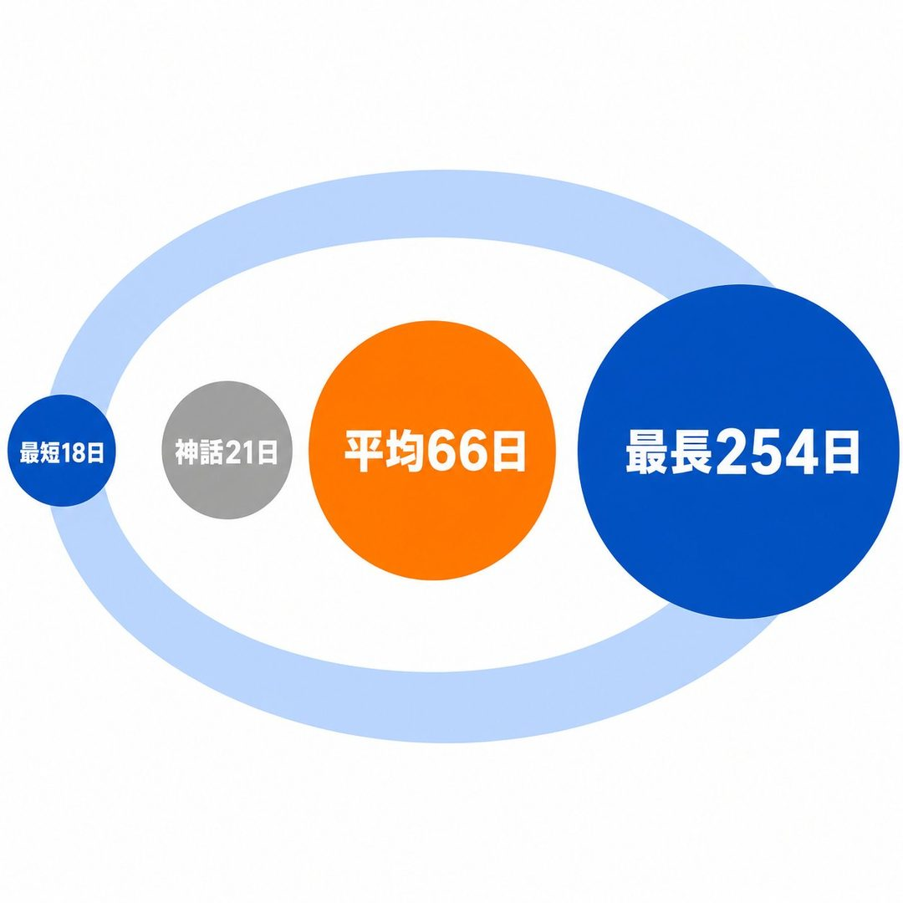
目標を失敗できないサイズまで割る
既存の習慣にくっつける
サイズが決まったら、次はその行動を置く場所を決めます。
ここで使うのがアンカリング、つまりすでに毎日やっている行動の直後に、新しい行動をくっつけることです。
船が錨を下ろして流されなくなるように、既存の習慣を錨にして新しい行動をつなぎ留める、という発想です。
日本語圏では「くっつけ習慣」という呼び方で広まっています。
なぜこれが効くのか。
第2章で紹介した南カリフォルニア大学のWendy Woodの研究では、私たちの日常行動のうち約40から43パーセントが、同じ状況で繰り返される自動的な行動だと報告されています。
歯を磨く、コーヒーを淹れる、電車に乗る、風呂に入る。
これらはもう意志で選ばれていません。
すでに完成して自動で回っている行動です。
新しい行動を、この自動で回る歯車のすぐ隣に置く。
すると、思い出す努力が少しずつ減っていきます。
くっつける相手は、頻度と時刻が安定している行動を選びます。
歯磨きの後、コーヒーを淹れた後、パソコンを立ち上げた後、風呂から出た後、子どもを寝かしつけた後。
逆に「気が向いたら」「仕事が早く終わったら」は錨になりません。
それ自体が不安定だからです。
もう一つ大事なのが、「直後」を守ることです。
歯磨きの後に腕立て1回なら、歯ブラシを置いたその場でやります。
「歯磨きの後、しばらくして」は、隙間に別の行動が入り込み、錨から糸が切れます。
既存の習慣が終わる瞬間と、新しい行動が始まる瞬間の間に、何も挟まないこと。
これが接続の強さを左右します。
自分の一日を朝から順にたどって、確実に毎日起きている行動を五つほど書き出してみてください。
そのうちの一つが、あなたの錨になります。
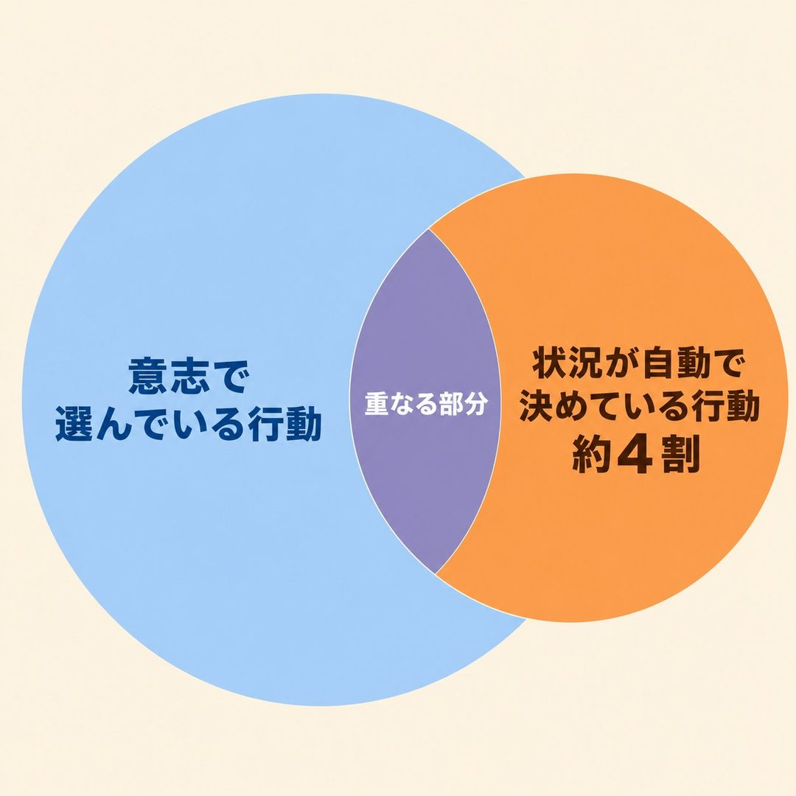
既存の習慣に新しい行動をくっつける
もしXならY ― 実行意図の力
錨が決まったら、それを一つの文にします。
ここで登場するのが、この章でいちばん強力な道具、実行意図です。
これはニューヨーク大学のPeter Gollwitzerが1993年に提唱し、1999年に American Psychologist 誌で体系化した考え方で、行動を「もしXが起きたら、Yをする」という条件文の形で事前に決めておく、というものです。
Gollwitzerの研究では、この形で事前に計画した群は、計画しなかった群のおよそ3倍の達成率を示しました。
やる気を上げたわけでも、能力を鍛えたわけでもない、というのが本書の見方です。
決め方の形式を変えただけだと考えることができます。
なぜ形式だけでこれほど変わるのか。
ここから先は本書の見方ですが、理由は意思決定の回数にあると考えられます。
「今週中に運動する」と決めた場合、私たちは毎日「今日やるか、明日にするか」を判断し続けなければなりません。
判断のたびに、疲れや気分が言い訳を差し込んできます。
読者の方がよく口にする「今日しんどいな、明日2時間やろう」は、この判断の隙間で生まれる自己交渉でしょう。
ところが「もし朝コーヒーを淹れたら、参考書を1ページ開く」と決めてあれば、判断する場面が減ります。
コーヒーを淹れたかどうかは、考えなくてもわかるからです。
実行意図とは、やる気の問題を、事実確認の問題にすり替える技術だと言えるかもしれません。
書き方のルールは二つだけです。
第一に、Xは自分の目に見える出来事にすること。
「やる気が出たら」「時間ができたら」は見えないので条件になりません。
「歯ブラシを置いたら」「電車が発車したら」は見えます。
第二に、Yは前節で決めた小さすぎる行動にすること。
ここで欲張って「1時間勉強する」と書くと、条件文の強さが台無しになります。
いま、あなたの一文を書いてください。
「もし〇〇したら、△△する」。
この一行が、あなたの設計図の中心線です。
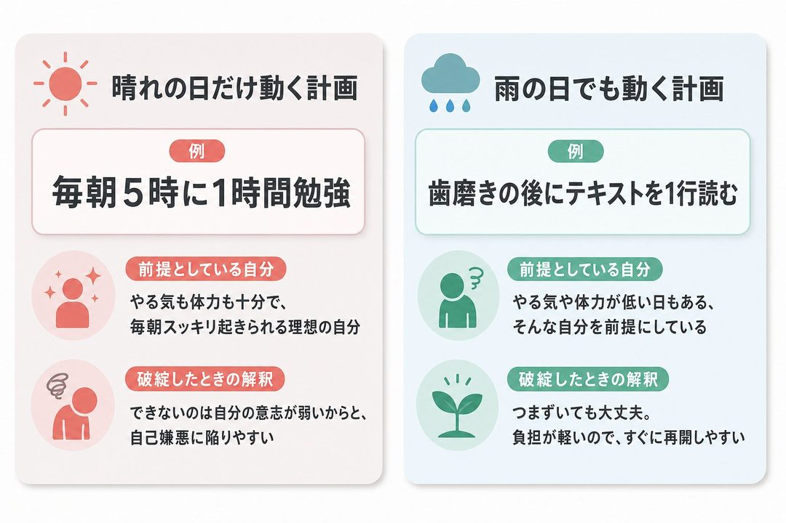
実行意図の一行の型
時間と場所を固定する
条件文ができたら、その一行に時間と場所を縫いつけます。
続かない人の記録を見ると、行動そのものより先に、時間と場所が崩れていることが多いのです。
今日は朝、明日は夜。
今日はリビング、明日はカフェ。
行動は同じでも、周囲の景色が毎回変わっていると、脳は「これはいつもの流れだ」と判断できません。
Wendy Woodが示した自動的な行動は、いずれも文脈、つまり時間帯や場所や直前の状況とセットになっていました。
歯磨きが自動なのは、洗面所という場所と、起床直後という時間に縫いつけられているからだと考えられます。
行動を自動にしたければ、行動ではなく文脈を固定することが有効だと考えられます。
具体的には、あなたの一行に「いつ」と「どこで」を書き足します。
「もしコーヒーを淹れたら、参考書を1ページ開く」を、「朝7時、ダイニングテーブルで、コーヒーを淹れたら参考書を1ページ開く」にします。
参考書は前の晩からそのテーブルに置いておきます。
行動を固定するとは、その行動が起きる景色を毎回同じにすることです。
時間帯の固定には、もう一つの効果があります。
スタンフォード大学のAndrew Hubermanは、同じ時間帯に同じ行動を繰り返すと、開始する前から体がその行動に向けて準備を始める、つまり時間帯そのものが合図になっていく現象を解説しています。
毎朝同じ時刻に走る人が、その時刻になると体が勝手にそわそわするのは、この条件づけが働いているためだと考えられます。
なお、ここでも完璧主義は禁物です。
時間がずれた日を失敗と数える必要はありません。
Hubermanが紹介するように、習慣が自動になるまでの日数には18日から254日という大きな個人差があります。
固定は目安であって、契約書ではありません。
ずれたら翌日また同じ景色に戻す。
それだけで十分です。
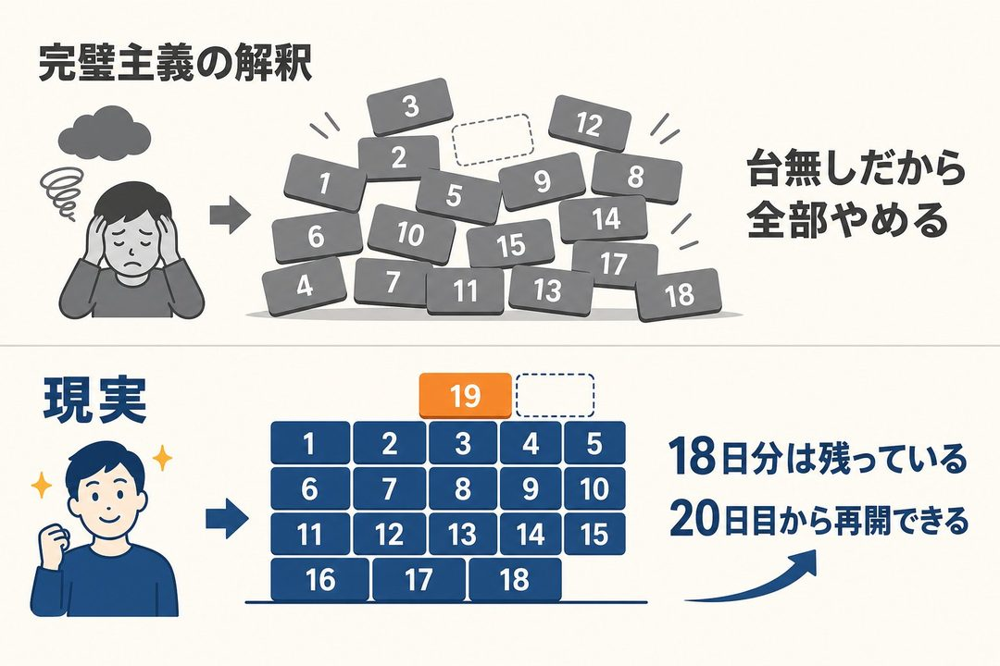
行動を景色ごと固定する
やった直後に自分を祝う
最後の部品は、多くの人が省いてしまう部品です。
やった直後に、自分を祝うこと。
スタンフォード大学の行動科学者BJ Foggは、極小の行動を既存の習慣の直後につなぎ、成功した瞬間に自分を祝うことを提唱しています。
彼が celebration と呼ぶこの一手は、ガッツポーズでも、小さく「よし」と口に出すことでも、鏡の自分に笑いかけることでも構いません。
大事なのは、行動が終わった直後、数秒以内に、自分で自分に良い感情を発生させることです。
ばかばかしく感じるでしょうか。
しかしここには理屈があります。
Foggの考え方に沿えば、行動が定着するかどうかを左右する大きな要因の一つは、その行動の価値ではなく、その行動に結びついた感情だということになります。
腕立て1回に健康効果はほとんどありません。
それでも、終わった瞬間に「よし」と言った人の脳には、「あれは気分の良い行動だった」という記録が残ると考えられます。
残った記録が、次の日の始めやすさにつながっていきます。
逆に、1回終えて「たった1回か、こんなので意味あるのか」と自分を採点した人は、その行動に嫌な感情を結びつけてしまうかもしれません。
成果を採点する癖は、初動を弱らせる一因になり得ます。
そしてこの部品は、日本の読者にとって特に重要かもしれません。
習慣化アプリ「みんチャレ」が2023年10月に利用者706人へ行った調査では、三日坊主の経験がある人は85パーセントにのぼり、その挫折理由の上位には「やめてもペナルティがなかった」「やらない言い訳を作った」「継続しやすい環境を整えなかった」が並びました。
ここから先は本書の見方ですが、私たちは罰の不足には敏感でも、祝いの不足には気づきにくいのかもしれません。
だとすれば、設計として組み込むべきは、罰ではなく祝いのほうだと考えられます。
罰は行動を避けさせる方向に働きやすく、祝いは行動を呼び寄せる方向に働きやすい、というのが本書の立場です。
これで五つの部品が揃いました。
小さすぎる行動を決め、既存の習慣にくっつけ、条件文にし、時間と場所を固定し、終わった瞬間に祝う。
あなたの一行は、いまこう書けているはずです。
「朝7時、ダイニングで、コーヒーを淹れたら、参考書を1ページ開き、開けたら小さくよしと言う」。
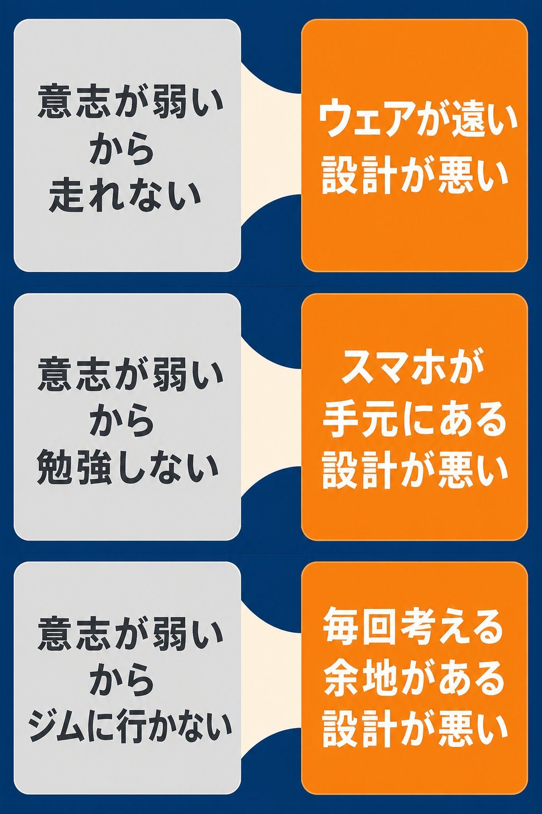
祝いが次の一回を呼び寄せる
設計図は引けた。しかし
ここまでで、設計図は完成しました。
あとは実行するだけです。
そして実際、この設計図どおりに始めた人の多くは、最初の一週間はあっさり成功しやすいはずです。
小さくしてあるからです。
問題はその先にあります。
三日坊主という言葉は、実はやや親切すぎる呼び名かもしれません。
本当に多くの人が姿を消すのは、三日目ではないからです。
前述の「みんチャレ」の調査では、習慣化の効果を実感した時期として、3日以内が17パーセント、7日以内が17パーセント、21日以内が27パーセントと報告されています。
合わせて61パーセントの人が、3週間以内に「変わってきた」という手応えを得ている計算になります。
裏を返せば、残る4割近くの人は、3週間を過ぎても、まだはっきりした手応えを得られていない可能性があるということです。
効果を実感するまでの期間には、それだけ個人差があります。
小さすぎる行動は、始めるのを助けてくれます。
しかし、その行動が退屈になった日、記録が一日途切れた日、誰も見ていないと気づいた日に、設計図の五つの部品だけで持ちこたえられるでしょうか。
私たちを待っているのは、3週間の壁です。
この壁の前で、意志は最も頼りにならない味方になります。
では、続いた人たちは、その区間を何を使って渡ったのでしょうか。
次章では、彼らの多くが持ち込んでいた「自分の外側にある装置」を見ていきます。
05第4章 3週間の壁を越える ― 続く人が使っている外部装置
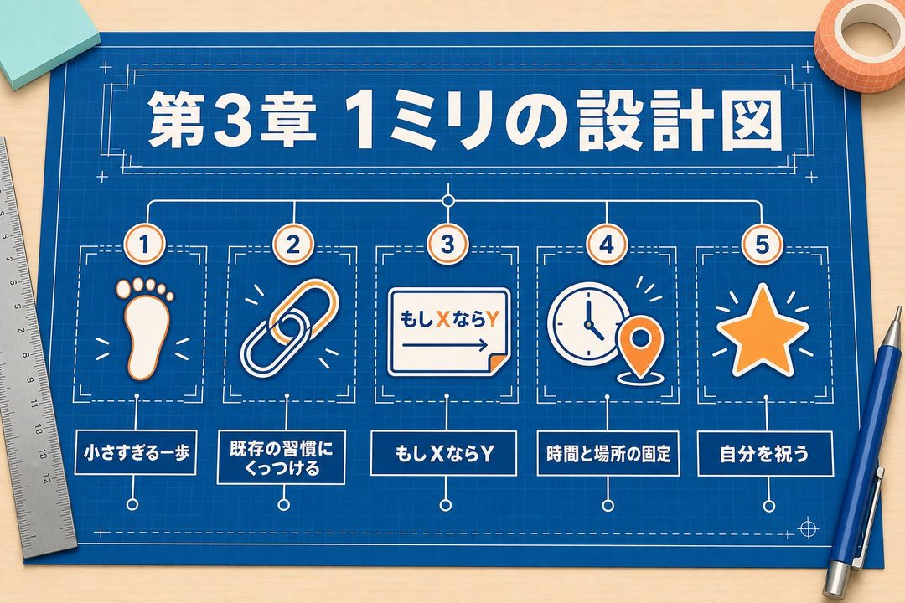
第4章 3週間の壁を越える
前章で、あなたは1ミリの設計図を手に入れました。
小さすぎて失敗しようがない初動を決め、すでにある習慣にくっつけ、時間と場所を固定し、やった直後に自分を祝う。
ここまでは、正直に言えば誰にでもできます。
本当に難しいのは、その設計図が今日の気分に押し流されずに、来週も再来週も動き続けるかどうかです。
前章の最後に残した問いは、こうでした。
設計図どおりに始めた小さな1ミリを、あなたは何週間、持ちこたえられるでしょうか。
この章はその問いへの回答です。
ただし「気合で乗り切りましょう」とは言いません。
続く人の多くは、気合ではなく外部装置を使っています。
記録、仲間、環境。
この3つを、あなたの外側に取り付ける方法を、読者が実際につまずく順番に沿って、質問と回答の形で見ていきます。
手応えが乏しい時期を越える
質問: 最初の数日は楽しいのに、2週間目あたりで急にどうでもよくなります。
私の気合が足りないのでしょうか。
気合の問題ではないのかもしれません。
ここから先は本書の見方ですが、報酬が届くタイミングの問題だと考えられます。
習慣化アプリ「みんチャレ」を運営するエーテンラボが、2023年10月に利用者706人へ行った調査があります。
習慣化の効果を実感した時期を聞いたところ、3日以内が17%、7日以内が17%、21日以内が27%でした。
足し合わせると、61%が3週間以内に「効果が出てきた」と感じていることになります。
裏を返せば、残る4割近くは3週間を過ぎても、まだはっきりした手応えを得ていないということです。
効果を実感するタイミングには、それだけ個人差があります。
手応えがまだ来ていないからといって、あなたのやり方が間違っているとは限りません。
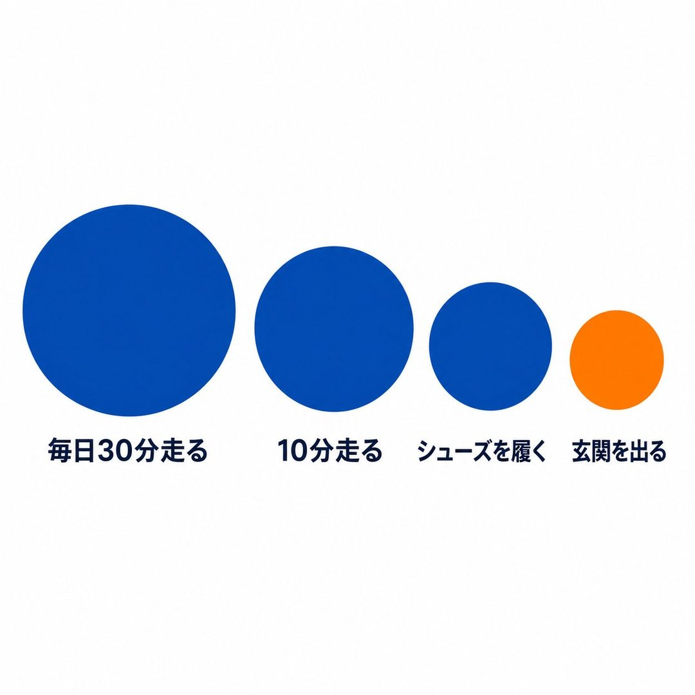
効果を実感するまでの期間
同じ構図が語学学習でも起きています。
ビズメイツが2021年5月に発表した調査では、英語学習の経験者111名のうち87.4%が挫折を経験し、そのうち81.4%が3ヶ月以内に脱落していました。
挫折理由の上位は、モチベーション低下が62.9%、自己管理ができずが51.5%、そして上達を感じられずが39.2%です。
3番目の「上達を感じられず」に注目してください。
これは効果実感がまだ届いていない状態を、そのまま言葉にしたものだと考えられます。
ここから先は本書の見方ですが、1番目の「モチベーション低下」も、独立した原因ではなく、手応えが返ってこない期間が続いた結果として生まれている可能性があります。
だとすれば、やる気が落ちたから続かないのではなく、手応えが来ないからやる気が落ちる、という順番で捉え直すこともできます。
もしその順番だとすれば、対策の組み立て方も変わってきます。
もうひとつ、別の調査も参考になります。
ロンドン大学ユニバーシティ・カレッジのフィリッパ・ラリーらが2009年に発表した研究では、行動が自動的に感じられるまでに平均66日、個人差は18日から254日でした。
これは「効果を実感するまでの期間」ではなく「体が意識せずに動くまでの期間」を測った、みんチャレ調査とは対象も測定項目も異なる別の調査です。
2つを足し算して結論は出せませんが、どちらからも共通の示唆は読み取れます。
効果を実感し始めたあとも、しばらくは意識的な努力が必要な時期が続くことがある、ということです。
だからこそ、手応えが乏しいと感じる時期を、意志の力だけで乗り切ろうとするのは燃費が悪いのです。
ここでこそ、外部装置に肩代わりさせましょう。
記録は、記憶より強い
質問: 続いているのかどうか、自分でもよく分からなくなります。
分からなくなって当然です。
記憶は、都合よく丸めるからです。
3日サボっても、人は「まあまあやれている」と記憶を丸めます。
逆に10日続いていても「大したことはしていない」と丸めます。
どちらに丸めても結果は同じで、自分の現在地が見えなくなります。
現在地が見えない乗り物から、人は降ります。
記録は丸めません。
やった日とやらなかった日を、そのままの形で残します。
カレンダーに丸を書くだけでも、アプリのボタンを1回押すだけでも構いません。
大事なのは、あなたの評価ではなく事実が残ることです。
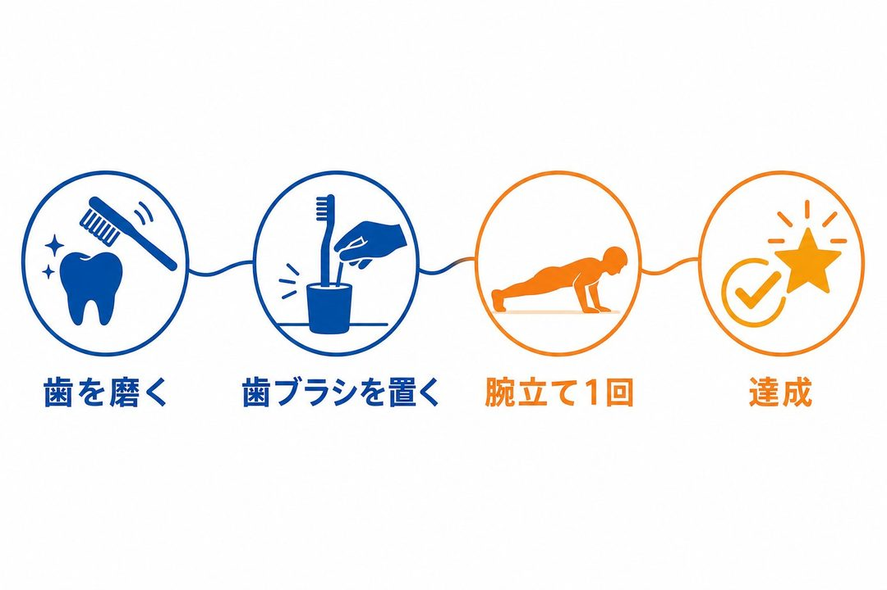
記憶と記録は何が違うか
そして記録には、もうひとつ効き目があります。
累計が常に見えていることです。
実践者の声を集めると、この効果はかなり具体的に語られます。
画面に「19日」と出ていると、なんとなく20で切りたくなる。
この「もう少しやろうかな」は、意志の力によるものというより、数字が目に入ったことによって、自然に湧いた気持ちだと考えられます。
外部装置とは、こういうものを指します。
ただし、記録には設計上の落とし穴があります。
記録そのものが面倒だと、記録ごと捨てられます。
続く記録には共通点があります。
タップだけで終わることです。
アプリを開き、目的の画面まで何度も遷移し、日付を選び、コメントを書き、保存を押す。
この流れは、それ自体が新しい習慣として重すぎます。
実際、画面遷移の多い記録は続かないという声は、実践者の記事に繰り返し出てきます。
記録は、あなたの1ミリより小さくなければいけません。
個人で淡々と積みたいなら「Streaks」のようなシンプルな記録型のアプリが向いています。
紙のカレンダーでも十分です。
実践者に多いのは、アプリで毎日の記録を取り、ノートは週末の振り返りだけに使うという分担です。
毎日の記録と、週1回の振り返りを、同じ道具でやろうとしない。
この切り分けだけで、記録は驚くほど軽くなります。
最後に、置き場所です。
記録の道具は、生活の導線上に置いてください。
歯ブラシの横、玄関の靴の上、パソコンを開いた最初の画面。
取りに行かないと記録できない場所に置いた時点で、その記録はいずれ止まります。
途切れた日の扱い方
質問: 5日続けたのに、寝坊で1日飛ばしました。
もうリセットですよね。
リセットではありません。
ここは、この本の中でも特に強く言いたいところです。
1日空けても、連鎖は死にません。
死ぬのは、1日空けたときではありません。
「1日空けた自分は失格だ」と判定した瞬間です。
そしてこの判定は、日本語圏の習慣化でとりわけよく起きます。
完璧主義という言葉で語られるこの傾向は、実は継続の味方ではなく、最も静かな破壊装置です。
完璧にできないなら、やらないほうがマシだ。
この理屈は、途切れた1日を、途切れた1ヶ月に変えてしまいます。
数字で考えれば、判定の理不尽さが見えてきます。
自動化までは平均66日とされています。
ここから先は本書の見方ですが、66日の道のりの途中で1日欠けたからといって、それまでに積み上げた分がすべて消えるとは考えにくいはずです。
複利は日割りの勤怠評価ではなく、累計に近いものだと捉えることができます。
欠けた1日は、累計から1を引くだけで、ゼロに戻す操作ではない、と本書は考えます。
ゼロに戻すのは、あなたの自己判定のほうです。
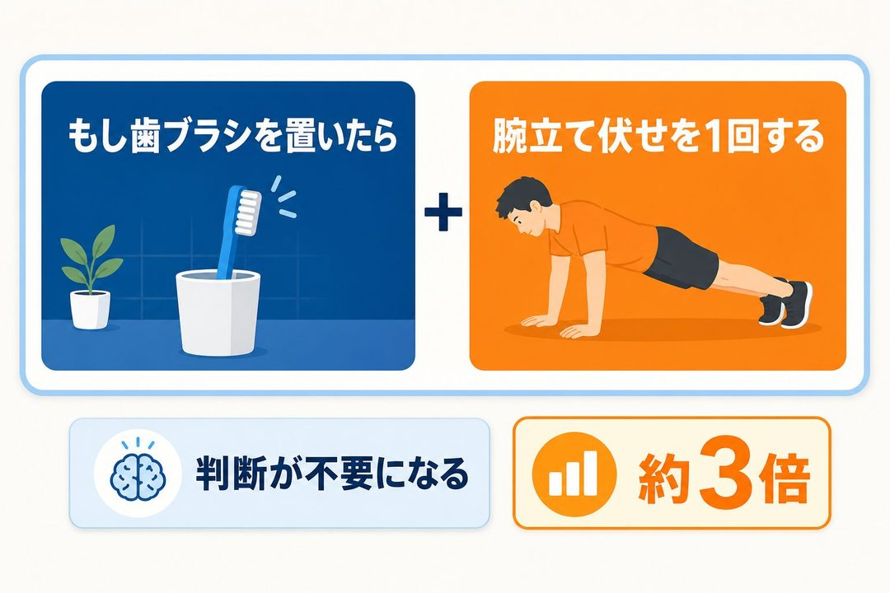
途切れた日からの戻り方
そこで、本書が提案する復帰ルールを1つだけ決めておきます。
1日は空けてもいい。
ただし2日連続では空けない、というラインです。
これは研究で裏づけられた数字ではなく、実践のための目安として提案するものです。
これを紙に書いて、記録の道具の近くに貼っておいてください。
「なるべく毎日」ではなく、空けていい日の上限を先に決めるのがポイントです。
曖昧なままにしておくと、その日の自分が都合よく解釈します。
生活リズムが不規則で、2日連続というライン自体が引きにくい方もいるはずです。
その場合は、次に予定されている機会に、最小サイズの行動で復帰するという目安でも構いません。
大事なのは、いつ・どう戻るかを事前に決めておくことです。
前章で使った「もしXならY」の形も、ここでそのまま使えます。
もし1日飛ばしたら、翌日は最小サイズだけやる。
腕立てなら1回、英語なら1文、日記なら1行。
復帰の日にいつもの量を課すから、復帰そのものが億劫になるのです。
復帰は軽くしてください。
記録の付け方にも工夫があります。
途切れた日にバツを付けない。
空白のままにする。
バツは判定であり、判定はあなたを裁く材料になります。
空白なら、事実が残るだけです。
最近のSNSでは、完璧な継続記録よりも、失敗も含めた日常のログのほうが共感を集める傾向があります。
これは見られ方の話であって、それで習慣が長続きすると証明されたわけではありません。
それでも本書がこの姿勢をおすすめするのは、別の理由からです。
途切れを隠そうとすると、記録そのものを付けなくなるからです。
空白を認めない人は、空白ができた瞬間に記録を閉じてしまいます。
隠す必要がなければ、記録は続けられます。
人に見られると、続く
質問: 一人でやると、必ず消えます。
そのとおりです。
そして、それはあなたの性格の話ではありません。
先ほどのエーテンラボによる706人調査には、もうひとつ重要な結果があります。
三日坊主の経験率は85%。
そして挫折理由として挙がった上位が、「やめてもペナルティがなかった」「やらない言い訳を作った」「継続しやすい環境を整えなかった」でした。
この3つの回答は、意志の弱さそのものを尋ねたものではありません。
ここから先は本書の見方ですが、これらは外側の仕組みが足りなかったことを示している、と読むことができます。
一人で始めた習慣は、やめても誰も困りません。
誰も困らないことを、人は静かにやめてしまいやすいのかもしれません。
ならば、裏返せばいい。
やめたことが誰かに見える状態を作るのです。
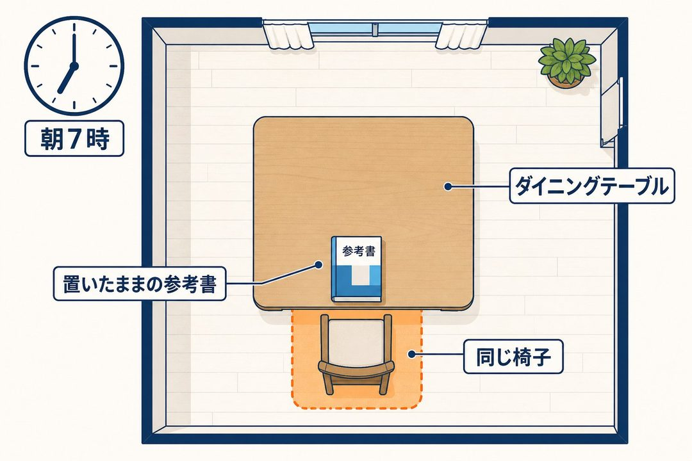
匿名5人チームという装置
日本でこの発想をそのまま形にしたのが「みんチャレ」です。
匿名の5人チームを組み、チャットで毎日の取り組みを報告し合う仕組みで、利用者は140万人を突破し、チーム数は15万以上にのぼります。
注目してほしいのは、匿名だという点です。
評価も見栄も付いてこない。
取り出されているのは、報告する相手がいるという一点だけです。
人に見られると続きやすくなるという現象は、優等生に見られたいという欲求からというより、もっと単純な「今日、誰も報告していない枠が空いている」という居心地の悪さから来ているのかもしれません。
5人という規模にも意味があります。
100人のグループでは、あなた一人の沈黙は誰にも気づかれにくくなります。
誰にも気づかれにくい場所は、一人でやっているのに近くなると考えられます。
ビズメイツの調査で、挫折理由の2番目が「自己管理ができず」だったことを思い出してください。
ここから先は本書の見方ですが、51.5%の人は、自分の管理は自分でやるという前提のまま行き詰まった、と読むこともできます。
自己管理を自己の内側に閉じている限り、やる気が落ちた日に止めてくれる人がいなくなりやすいのです。
管理の一部を、外に出しましょう。
やり方は段階的で構いません。
まず、誰か1人に宣言する。
次に、その相手に週1回でいいので進捗を伝える。
最後に、うまくいかなかった日も報告する。
この3段目が特に効くと考えられます。
成功だけを報告する関係は、失敗した瞬間に連絡が途絶えやすくなります。
失敗を報告できる相手がいれば、あなたを3週間の向こうへ運んでくれる可能性が高まります。
環境から言い訳を消す
質問: やる気はあるのに、気づくとスマホを見ています。
やる気はあるのだと思います。
問題は、やる気と誘惑を同じ土俵で戦わせていることです。
この勝負に、意志力で挑んではいけません。
距離で挑んでください。
スマホを別室に置く。
ただそれだけで、勝負は始まる前に終わります。
取りに行くのが面倒だからです。
人は、面倒なことをやめます。
この性質は、あなたの敵にも味方にもなります。
やめてほしい行動を面倒にし、続けてほしい行動を面倒でなくする。
環境設計とは、要するにこれだけのことです。
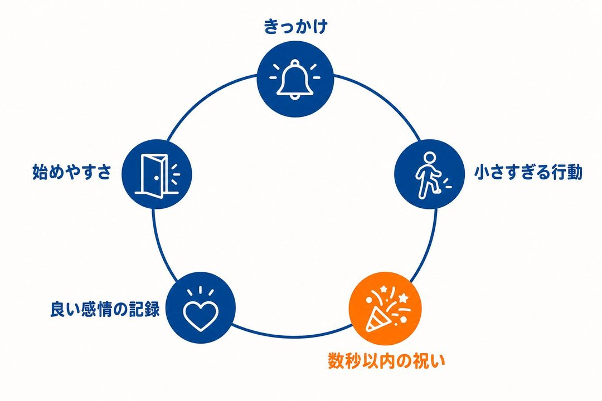
言い訳が消える部屋のつくり方
もうひとつ強力なのが、予約を先に入れてしまうことです。
トレーナーとの時間を押さえる、レッスンの日程を確定させる、講座の受講料を払い込む。
これらに共通しているのは、未来の自分から選択権を取り上げているという点です。
今日のあなたは、やる気に満ちています。
来週水曜の夜のあなたは、疲れています。
その水曜のあなたに「行くかどうか」を決めさせてはいけません。
決定権は、やる気のある今日のあなたが握ったまま、予約という形で固定してしまう。
続く人は、未来の自分を信用していません。
信用しない代わりに、選ばなくて済む状態を先に作っています。
そして、記録の話でも触れましたが、続けたい行動は生活導線の上に置いてください。
朝の通り道に本を置く。
パソコンを開いた最初の画面を記録アプリにする。
運動着を前の晩に椅子に掛けておく。
導線から1歩でも外れたものは、忙しい日に確実に飛ばされます。
最後に、この章のまとめとして手を動かす作業を1つ提案します。
言い訳の棚卸しです。
直近1ヶ月で「できなかった理由」を3つだけ書き出してください。
時間がなかった、疲れていた、忘れていた。
どんなものでも構いません。
そして、その1つずつに、物理的な対策を1つだけ当ててください。
忘れていたなら、道具を導線上に移す。
疲れていたなら、最小サイズを決め直す。
時間がなかったなら、予約を先に入れる。
エーテンラボの調査で挙がった挫折理由は「継続しやすい環境を整えなかった」でした。
整えなかったのなら、整えればいい。
それは性格の改造ではなく、部屋の模様替えに近い作業です。
今日できます。
記録で現在地を見えるようにし、仲間で「やめても誰も困らない」を壊し、環境で言い訳を物理的に消す。
この3つの外部装置があれば、手応えがまだ乏しいと感じる時期も、意志力にあまり頼らずに乗り切りやすくなります。
そうして続けていけば、61%の人が語ったような効果実感を、あなたも味わえる可能性が高まります。
さて、ここからが本題です。
仮にあなたが、記録も仲間も環境も整えて、平均66日を越えて、その行動が完全に自動になったとしましょう。
そのとき、あなたの手元には何が残っているのでしょうか。
体重が数キロ減ったこと。
英単語がいくらか増えたこと。
おそらく、それだけではありません。
続いた人が本当に手にしているものは、成果そのものではないところにあります。
そして、その本当の獲得物は、3週間や66日という単位では姿を見せません。
もっと長い時間軸で、ようやく輪郭を現します。
10年です。
次の章で、時間の向きを反転させます。
今日から未来へ積み上げるのではなく、10年後の自分から今日へ逆算する。
そのとき問われるのは、たった一つです。
あなたは10年後、どんな証拠を積み上げた人として、そこに立っていたいでしょうか。
06第5章 10年後の自分から逆算する ― 積み上がった証拠が人を変える
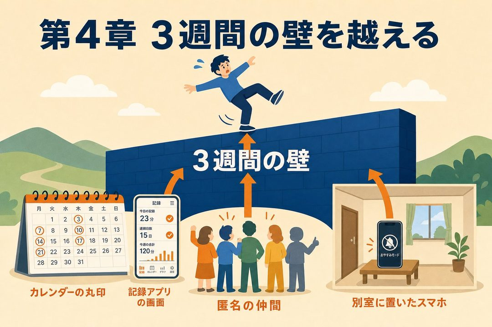
第5章 10年後の自分から逆算する
前の章で、記録・可視化・仲間・環境という外部装置を手に入れました。
これで、意志力に頼らずに続く仕掛けはひととおり揃ったことになります。
そこで、最後に残る問いがあります。
続けられるようになったとして、その先に何があるのでしょうか。
資格が取れる。
体重が落ちる。
英語が話せる。
もちろん、それらは手に入ります。
ただ、実際に何かを続けられた人が「一番大きかった」と口を揃えるのは、たいていそこではありません。
この章では、続けた先に本当に積み上がるものの正体を確かめ、第1章で見た複利の話に回収して本書を締めくくります。
続いた人が本当に手にしたもの
想像してみてください。
あなたが「毎日1ページだけ本を読む」と決めて、それを100日続けたとします。
読んだのは100ページ。
冊数にすれば数冊です。
人生が変わるほどの量ではありません。
ではその100日間で、あなたの中に何が起きたのでしょうか。
変わったのは、自分に対して持っている証拠の量です。
「今度こそ」と言っては投げ出してきた人にとって、100日という記録は、頭の中の理屈ではなく、実際に起きた出来事です。
過去のあなたが100回、決めたことを実行した。
この事実は、あなたが否定しようとしても消せません。
ここが重要なところです。
多くの人は、順番を逆に考えています。
「自分に自信がついたら続けられるようになる」と思っている。
ここから先は本書の見方ですが、実際は逆で、続けた事実が先にあり、自信はその後から遅れてついてくる、と考えることができます。
自信とは性格ではなく、積み上がった証拠を見た結果として生まれる感想だと捉えると、腑に落ちやすくなります。
だから、証拠が1つもない状態で「意志を強く持とう」と念じても効きません。
念じる材料がないのです。
逆に言えば、材料は小さくて構いません。
1ページでも、腕立て1回でもいい。
証拠は質ではなく、回数で積み上がります。
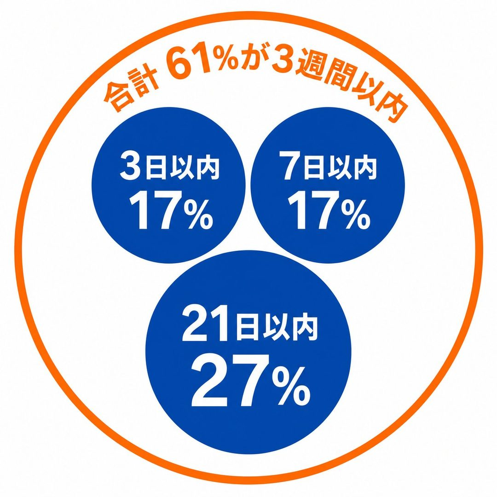
証拠は中心から外へ積み上がる
そして、この証拠には持ち運びができるという性質があります。
読書で100日続けた人は、次に運動を始めるとき、ゼロからのスタートではありません。
「自分は決めたことを続けられる」という証拠をすでに手に持っている。
エーテンラボが2023年10月に習慣化アプリの利用者706人に行った調査では、三日坊主の経験率は85%にのぼりました。
ほとんどの人が「続かなかった証拠」ばかりを集めてしまっている。
逆側の証拠を1つ持つだけで、立ち位置は変わっていくはずです。
習慣は増やさない。1つずつ、確実に。
ここまで読んで、やる気が出てきた人ほど危ないので、先に釘を刺しておきます。
同時にいくつも始めないでください。
三日坊主に悩む人の多くは、意志が弱いのではなく、欲張りです。
「朝5時起き、ジョギング、英語30分、日記、家計簿」を月曜日から全部始めようとする。
そして水曜日に全部崩れて、「やっぱり自分はダメだ」という証拠だけを増やしてしまいます。
メンタリストDaiGo氏は、人が同時に育てられる習慣はせいぜい1つだと指摘しています。
第2章で見たLallyらの研究を思い出してください。
ロンドン大学ユニバーシティ・カレッジのPhillippa Lallyらが96人を12週間追跡した2009年の研究では、行動が自動的だと感じられるまでに平均66日、個人差を含めると18日から254日かかっていました。
この研究が見ているのは1つの習慣が根づくまでの期間ですが、そこにこれだけの幅があるということは、それを5つ同時に育てようとすれば、どれも根づかないまま枯れてしまう可能性が高い、と考えられます。
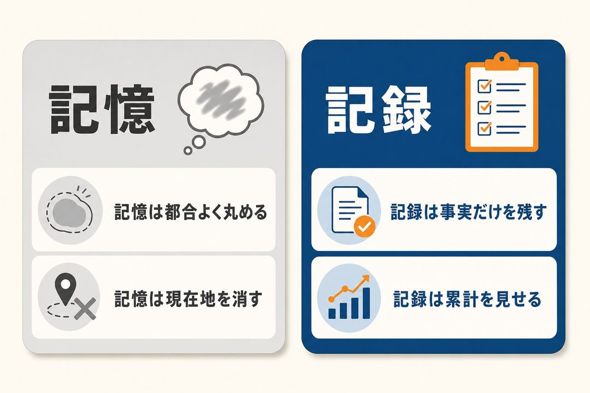
安定したら次の1段へ
だからこそ本書では、負荷を集中させないために、育てる習慣はつねに1つに絞ることを推奨します。
次を足すタイミングは、カレンダーで決めるのではありません。
いまの1つが、もう意識しなくても回るようになったかどうかで決めてください。
66日で安定する人もいれば、254日かかる人もいます。
早く進めることに意味はありません。
遅く見える方法ほど、10年後に残っていくというのが、この本の見方です。
やり方はシンプルです。
いまの1つが安定するまで、他にやりたいことはメモに書いて封をする。
捨てるのではなく、順番待ちの列に並べるだけです。
始めない、ではなく、まだ始めない。
この違いが、罪悪感を消してくれます。
生活が変われば、習慣も設計し直す
半年続いた習慣が、ある日ぱったり止まる。
転職した、引っ越した、子どもが生まれた、部署が変わった。
そんなタイミングで、それまで自動で回っていたものが一斉に崩れます。
これを「気の緩み」だと解釈すると、また自責が始まります。
しかし原因は別のところにあります。
南カリフォルニア大学のWendy Woodは、日常行動のうち約40%から43%が、同じ状況で繰り返される自動的な行動だと報告しています。
これは、日常行動のかなりの割合が同じ状況の中で繰り返し観察されているという報告であって、ここから先は本書の解釈になりますが、習慣は「あなたの意志」よりも「あなたの置かれた状況」に紐づいて動いている部分が大きい、と考えることができます。
同じ時間、同じ場所、同じ順番だから、考えずに体が動く。
だとすれば、状況が変われば習慣が止まりやすくなるのも自然なことだと考えられます。
壊れたのは意志ではなく、設計だと捉えると、次の一手が見えてきます。
引っ越しで通勤ルートが変わったなら、「駅の売店の前で単語帳を開く」というきっかけは物理的に消えています。
消えたきっかけの上に、意志力だけで行動を立たせようとしても無理があります。
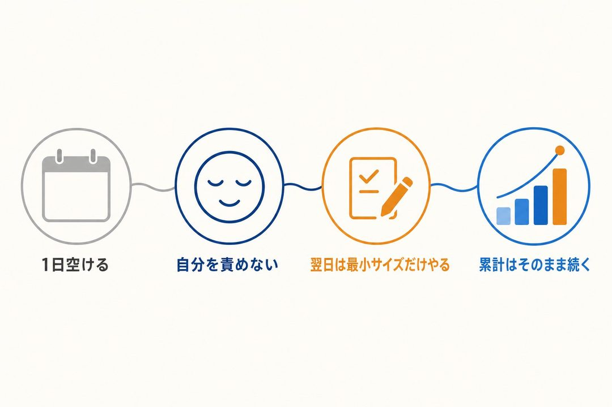
文脈が変われば設計も変える
やることは、反省ではなく再設計です。
第3章で使った手順をもう一度回してください。
新しい生活の中で、毎日必ず起きていることは何か。
それを見つけて、そこに小さな行動をくっつけ直す。
もしコーヒーを淹れ終わったら、本を1ページ開く。
ニューヨーク大学のPeter Gollwitzerが体系化した実行意図の研究では、事前にこの「もしXならY」の形で計画した人たちは、計画しなかった人たちの約3倍の達成率を示しました。
この研究自体は生活の変化を扱ったものではありませんが、同じ考え方は生活が変わったあとの再設計にも応用できるはずです。
人生の節目のたびに習慣が止まるのは、失敗ではありません。
設計図の更新時期が来た、というだけの合図です。
悪い習慣を「複利のマイナス」から外す
第1章で、複利はマイナス側にも同じように効くという話をしました。
ここで回収します。
良い習慣を1つ足すのと、悪い習慣を1つ減らすのは、算数としては同じ効果に見えます。
しかし体感はまったく違います。
足す方は最初の数週間、何も起きません。
減らす方は、その日のうちに時間が返ってきます。
夜のスマホを30分減らせば、今夜30分が手に入る。
減らす習慣は、効果が先に来るのです。
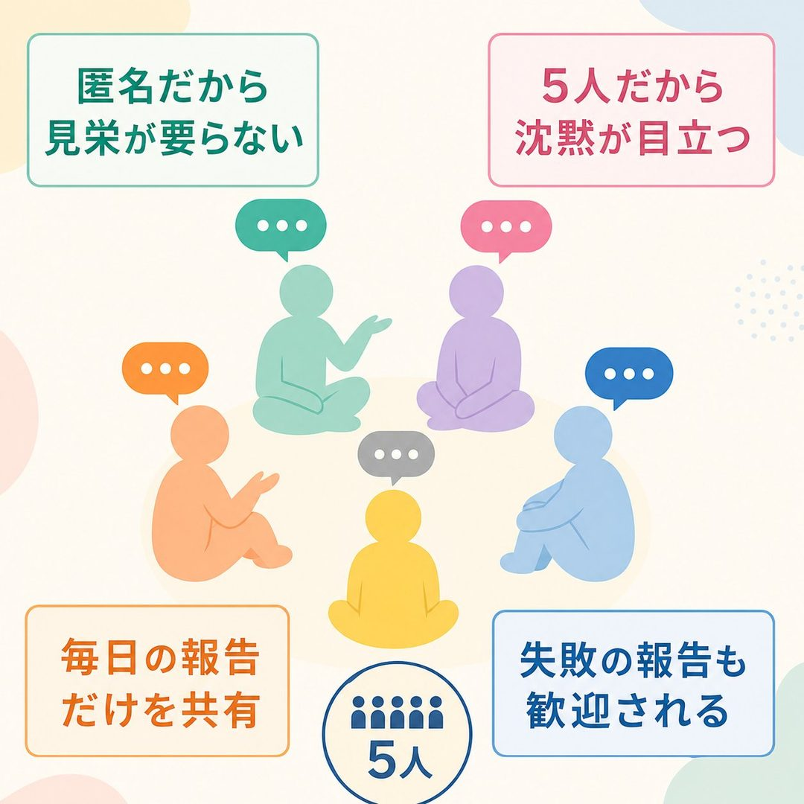
マイナスの複利も同じ速さで育つ
ただし、ここでも原則は変わりません。
減らす対象も、1つだけです。
やめたいものを全部リストにして、月曜から全部断つ。
この作戦が続かないことは、もう分かっているはずです。
夜更かし、間食、SNS、衝動買い。
全部やめようとした人は、金曜日には全部やっています。
だから、いま一番あなたの時間を溶かしているものを、1つだけ選んでください。
そして「やめる」ではなく「面倒にする」を狙います。
第2章で見たとおり、行動は意志だけでなく状況にも大きく左右されるのですから、状況の側をいじる方が確実です。
スマホを別室で充電する。
お菓子を買い置きしない。
アプリをホーム画面から外す。
ゼロにする必要はありません。
手が伸びるまでの手数を1つ増やすだけで、状況任せになっている行動は動きにくくなっていくと考えられます。
先の706人の調査では、三日坊主の理由の上位に「やめてもペナルティがなかった」「やらない言い訳を作った」「継続しやすい環境を整えなかった」が挙がっていました。
この3つは、本書の見方では、意志の弱さというより環境の整え方に関する話として読むことができます。
減らすときも、戦う相手は自分ではなく設計だと考えてみてください。
10年後の自分に渡すバトン
最後に、第1章の複利の話に戻ります。
毎日1ミリ。
今日やっても、明日には何も変わりません。
1週間続けても、鏡の中の自分は同じ顔をしています。
この「見返りのなさ」こそが、ほとんどの人を脱落させてきた正体でした。
英語学習について調べたビズメイツの2021年の調査では、経験者111名のうち87.4%が挫折し、そのうち81.4%が3ヶ月以内に離れていました。
理由の最多はモチベーションの低下で62.9%。
ここから先は本書の受け取り方ですが、成果が見える前に、燃料が切れる。
挫折の背景には、そういう構造があると考えることができます。
だからこそ、順番を入れ替えてください。
成果が出るまで待つのではなく、証拠を先に積むのです。
今日1ページ読んだ。
それだけで、今日の分の証拠は確定しました。
成果はまだ来なくていい。
来るまでの間、あなたは証拠を数えていればいいのです。
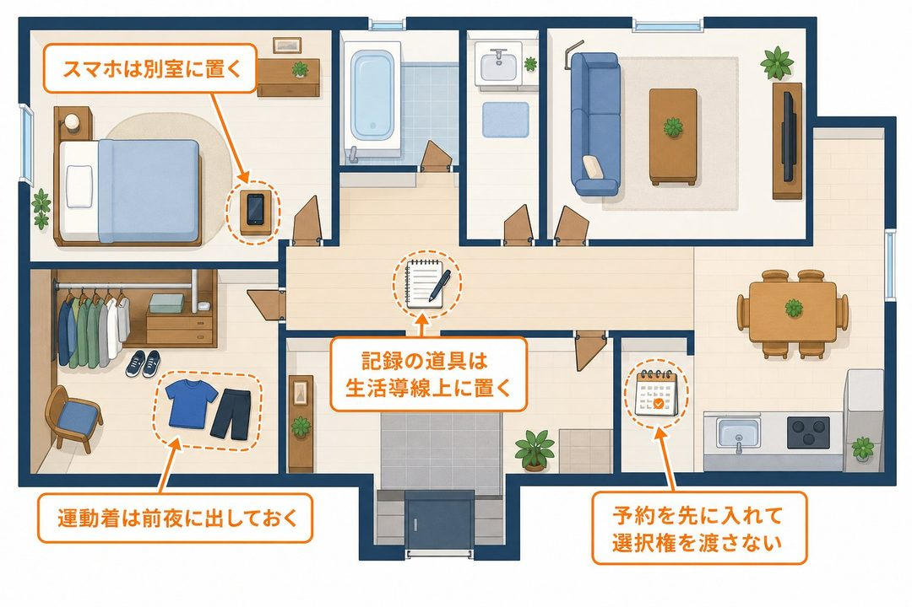
今日の1ミリが10年後へ渡るまで
10年後のあなたは、今日のあなたが決めたことの結果として存在します。
これは精神論ではなく、単なる足し算の帰結です。
1日1ページなら10年で3,650ページ。
これは複利ではなく、単純な足し算です。
Lallyらの研究では、行動の自動性が高まるまでの期間に18日から254日という幅が見られました。
ただしこの研究が観察したのは12週間までで、その先に何が起きるかを調べたものではありません。
自動性がどこまでも際限なく高まり続けると示したわけでもありません。
10年という時間軸は、どんな研究の射程からも外れています。
ですから、ここから先は本書の見方として受け取ってください。
一度考えずに動けるようになった行動は、次に何かを始めるときの負担を、いくらか軽くしてくれるのではないでしょうか。
1つ目に使った気力を、2つ目に回せるようになる。
その積み重なりのイメージを、本書は複利というたとえで呼んできました。
証明された法則ではなく、時間の使い方を考えるための道具です。
そして10年後のあなたが本当に受け取るのは、3,650ページの知識でも、引き締まった体でもないかもしれません。
受け取るのは、決めたことを、決めたとおりにやってきたという証拠の束です。
その束を持っている人は、11年目に何を始めても、もう「今度こそ」とは言わなくなっていくはずです。
言う必要を感じなくなるからです。
バトンは、いつも今日のあなたの手にあります。
10年後の自分は、まだ何も持っていません。
渡せるのは、今日のあなただけです。
さあ、渡すものを1つだけ決めましょう。
おわりに ― 今日の1ミリ
おわりに 今日の1ミリ
ここまで読んでくださって、ありがとうございます。
最後に、この本でお伝えしてきたことを、いちばん短い形にまとめておきます。
続かなかったのは、あなたの意志が弱かったからではありません。
続く仕組みが、生活の中になかっただけです。
仕組みは性格と違って、今日から変えられます。
そして、その仕組みを動かすために必要な行動は、あなたが思っているよりはるかに小さくて構いません。
腕立て伏せ1回。
日記1行。
本を1ページ。
小さすぎて失敗しようがない行動こそが、10年という時間を味方につけたときに、いちばん遠くまで運んでくれます。
忘れてほしいこと
この本を閉じたあと、むしろ忘れてしまってほしいことがあります。
研究者の名前も、パーセンテージも、覚えていなくて構いません。
Phillippa Lally の研究が示した平均66日という数字も、思い出せなくなって結構です。
あの数字を紹介したのは、暗記してほしかったからではありません。
あなたが21日で挫折したとき、それは異常ではなかったと知ってほしかったからです。
同じ研究では、人によって18日から254日まで幅があることもわかっています。
あなたが折れたその日は、統計の真ん中よりずっと手前だったかもしれない、というだけの話でした。
自分を責める材料が一つ減ったなら、この本の役目の半分は終わっています。
覚えておいてほしい、たった一つのこと
代わりに、一つだけ持ち帰ってください。
複利は、途中では見えません。
これが、この本を通じていちばんお伝えしたかったことです。
小さな行動を積み上げているあいだ、グラフはほとんど平らに見えます。
三週間たっても、二ヶ月たっても、目に見える変化はわずかです。
多くの人はここで「やっぱり意味がなかった」と判断して降ります。
効果が出る手前で、です。
けれど、平らに見える期間に何も起きていないわけではありません。
見えていないだけで、積み上がっています。
続けた人が最終的に手にするのは、実はスキルや成果そのものではありませんでした。
「自分は続けられる人間だ」という、否定しようのない証拠です。
そしてその証拠は、次の挑戦のハードルを静かに下げてくれるはずです。
最後のお願い
はじめにも書いた、この本の唯一のお願いを、もう一度だけ。
今日、たった1つだけ、小さすぎる行動を決めてください。
2つはいりません。
この本を読んで気分が高まっているいまこそ、あれもこれもと欲張りたくなるはずです。
運動も、読書も、早起きも、家計簿も。
その衝動が、これまで何度もあなたを振り出しに戻してきたものの正体でした。
だから、1つです。
そして決めるときは、次の三つだけ確認してください。
笑ってしまうくらい小さいか。
すでにある習慣の直後にくっついているか。
時間と場所が決まっているか。
それだけで十分です。
あとは今日、それをやってください。
祝ってください。
明日また、やってください。
10年後のあなたへ
10年後、あなたがこの本のことを覚えている可能性は低いと思います。
それでいいと思っています。
覚えていてほしいのは本のタイトルではなく、あなたが今日決めた、その1ミリのほうです。
もし10年後にそれがまだ続いていたなら、そのときのあなたは、この本を必要としない人になっているはずですから。
今日の1ミリは、今日のあなたには何も返してくれません。
明日も、来週も、たぶん来月も。
それでも、10年後のあなたは、今日のあなたが積んだ1ミリの上に立っています。
始めるのに、いい日を待つ必要はありません。
1ミリなら、今日できます。
いってらっしゃい。
© 竹谷知悦 / 特別プレゼント版